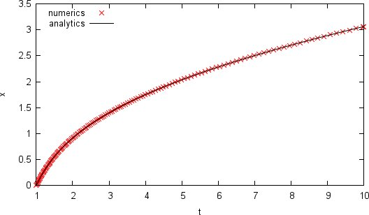

Here you find some short examples showing how quick and easy odeint can be used to implement numerical simulations. For a more detailed description please vist the docs.
- Lorenz System: 30 lines of C++ to generate a trajectory on the Lorenz attractor
- Simple 1D ODE : A small example showing the integration of a simple 1D system.
Lorenz System
30 lines of C++ to generate a trajectory on the Lorenz attractor.
#include <iostream>
#include <boost/array.hpp>
#include <boost/numeric/odeint.hpp>
using namespace std;
using namespace boost::numeric::odeint;
const double sigma = 10.0;
const double R = 28.0;
const double b = 8.0 / 3.0;
typedef boost::array< double , 3 > state_type;
void lorenz( const state_type &x , state_type &dxdt , double t )
{
dxdt[0] = sigma * ( x[1] - x[0] );
dxdt[1] = R * x[0] - x[1] - x[0] * x[2];
dxdt[2] = -b * x[2] + x[0] * x[1];
}
void write_lorenz( const state_type &x , const double t )
{
cout << t << '\t' << x[0] << '\t' << x[1] << '\t' << x[2] << endl;
}
int main(int argc, char **argv)
{
state_type x = { 10.0 , 1.0 , 1.0 };
integrate( lorenz , x , 0.0 , 25.0 , 0.1 , write_lorenz );
}

go to top
Simple 1D ODE
The following code shows how to obtain the numerical solution of a simple one-dimensional ODE. Note the configuration of the stepper type showing the flexibility of the library.
#include <iostream>
#include <boost/numeric/odeint.hpp>
using namespace std;
using namespace boost::numeric::odeint;
void rhs( const double x , double &dxdt , const double t )
{
dxdt = 3.0/(2.0*t*t) + x/(2.0*t);
}
void write_cout( const double &x , const double t )
{
cout << t << '\t' << x << endl;
}typedef runge_kutta_dopri5< double > stepper_type;
int main()
{
double x = 0.0;
integrate_adaptive( make_controlled( 1E-12 , 1E-12 , stepper_type() ) ,
rhs , x , 1.0 , 10.0 , 0.1 , write_cout );
}

go to top